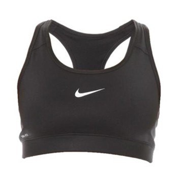

NIKE
Brassière Nike Pro Bra noir
27.00 €
Au même titre que le tee-shirt blanc uni ou la petite robe noire, le soutien-gorge de sport à structure de compression Nike Pro bra incarne la perfection dans ce qu'elle a de plus simple. Cette nouvelle version offre un design et une tenue de compression améliorés pour une protection et un confort hors norme.
Commander
Brassière Nike Pro Bra noir
27.00 €
Au même titre que le tee-shirt blanc uni ou la petite robe noire, le soutien-gorge de sport à structure de compression Nike Pro bra incarne la perfection dans ce qu'elle a de plus simple. Cette nouvelle version offre un design et une tenue de compression améliorés pour une protection et un confort hors norme.
Commander